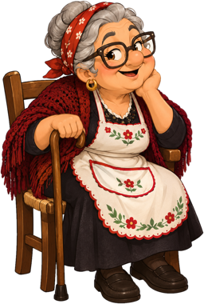
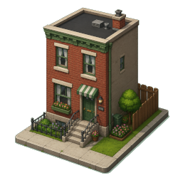

Benvenuti!!


bonjorno! Mein name ist Rosa Mario oder Auch Nonna Mario. Mein leben lang liebe ich es schon zu kochen für meine familie und vorallem für meine hart arbeitenden enkel kindern Mario und Luigi. Meine rezepte sind mir zu schade um nur bei mir zuhause auf pappier zu liegen deshalb will ich sie mit euch teilen. Viel Spaß beim nachmachen!